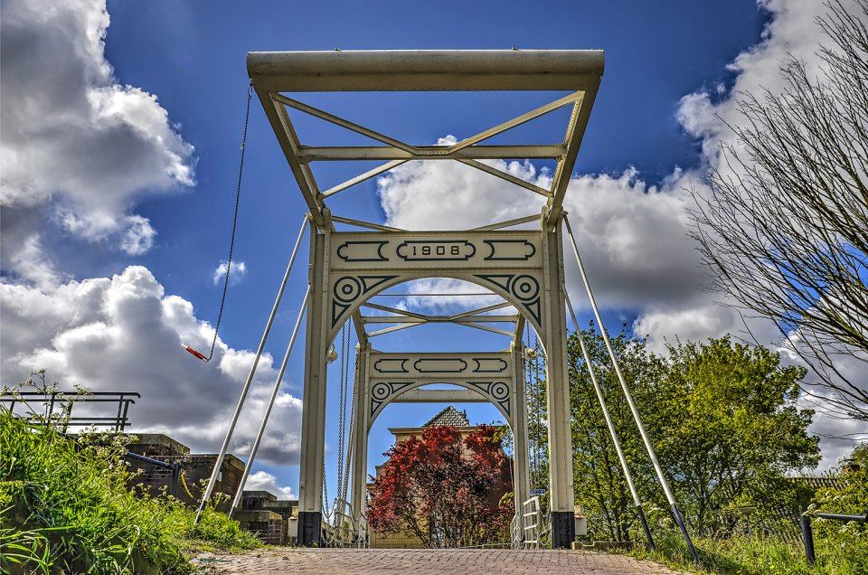
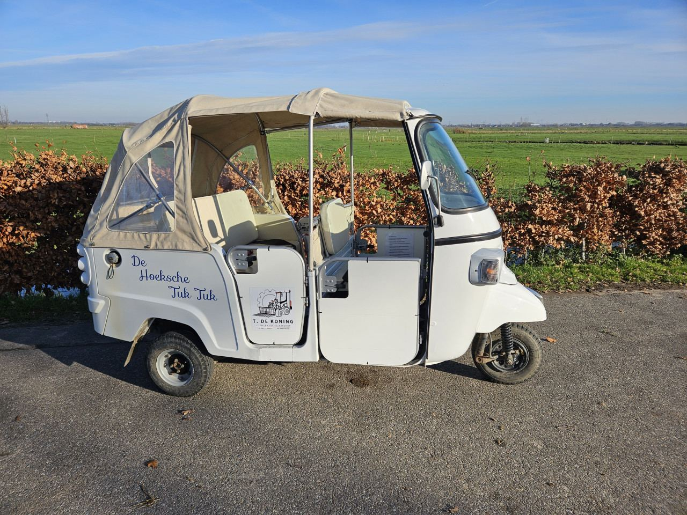
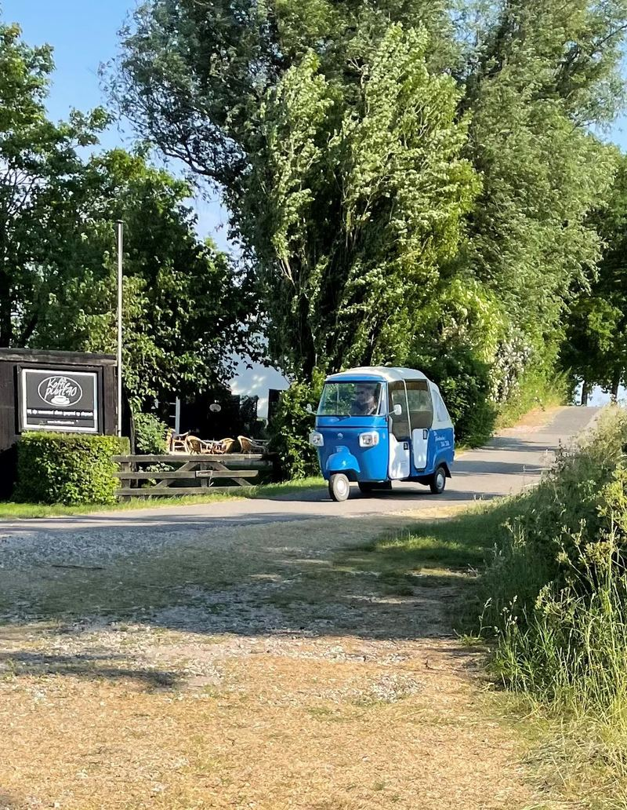
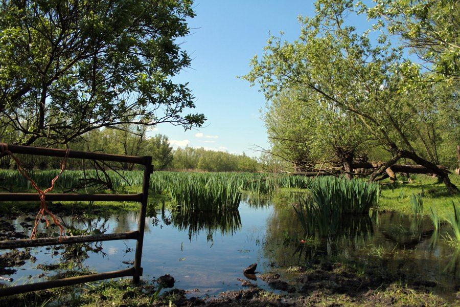
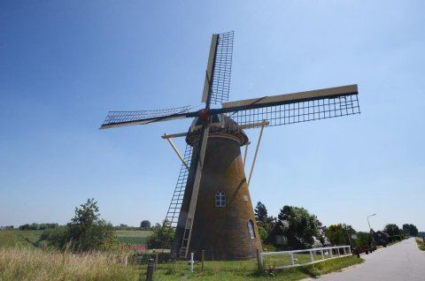
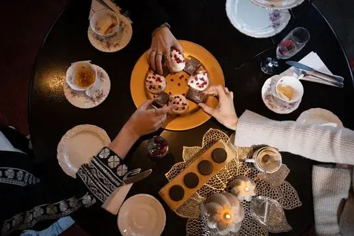
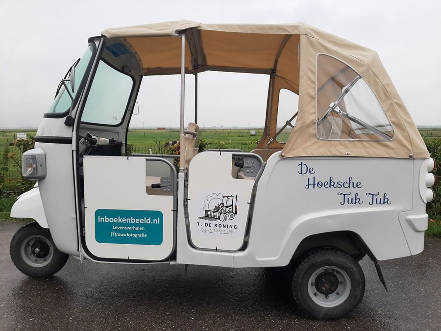
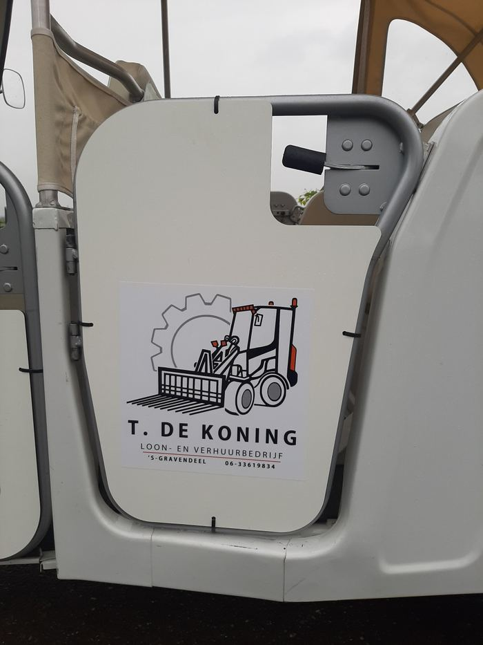
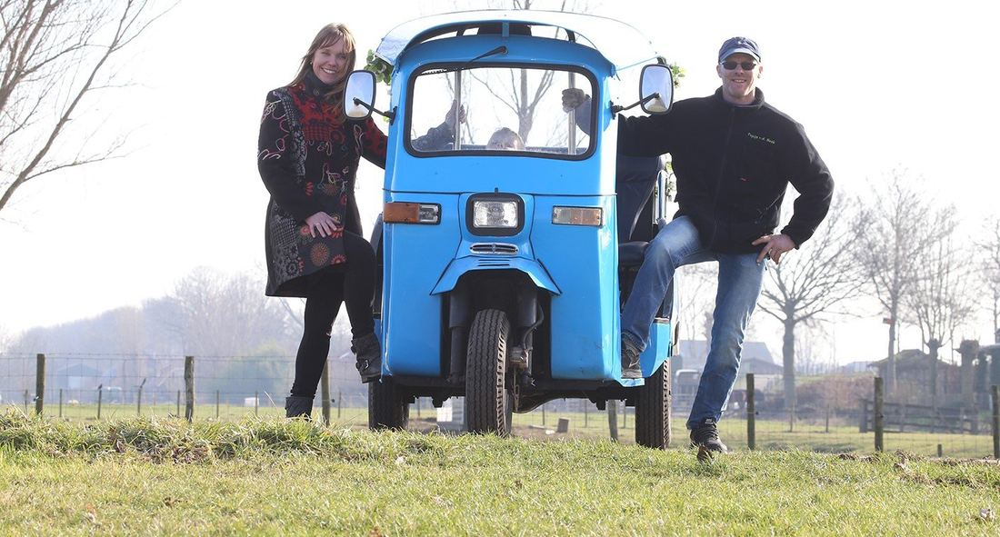

3 uur
Route links
Door de dorpskern en de polders.

Toeren langs dijken, polders en dorpjes, met familie, vrienden of collega's. Brandstof en verzekering zijn inbegrepen, en de kaart met terrasjes ligt al klaar.
U huurt de Tuk Tuk per dagdeel van 3 uur, of de hele dag. In elke Tuk Tuk passen een bestuurder en drie personen.
Geen kosten achteraf, mits er geen schade is en u op tijd terug bent. Een speciaal verzoek? Neem gerust contact op, we kijken wat we voor u kunnen betekenen.

Op onze locatie ligt een route voor u klaar. U kunt natuurlijk ook zelf uw eigen route bepalen.

Door de dorpskern en de polders.

Door de dorpskern en de polders.

Langs de dorpen en polders van het eiland.

Na uw rit een high tea bij Moos Kitchen.
Een middag toeren met collega's of klanten is weer eens iets anders. Met onze vijf Tuk Tuks gaat u met de hele groep samen op pad.
Of laat uw logo meerijden: voor een leuk tarief toeren wij met uw reclame door de Hoeksche Waard. Deze bedrijven gingen u voor:



De Hoeksche Tuk Tuk is opgericht in 2019. We verhuren onze Tuk Tuks aan particulieren en bedrijven, vanaf de Oudendijk in Strijen.
De Hoeksche Waard heeft mooie dijken, pittoreske dorpjes, veel natuur en dieren, en een interessante historie. Een eiland dat graag ontdekt wordt, en met een Tuk Tuk doet u dat op een originele manier.
Pepijn en Nicolette van der Beek wensen u alvast veel plezier!
Geef uw datum, dagdeel en het aantal Tuk Tuks door. We laten u snel weten of het past.
Bel of app ons, dan kijken we samen naar een datum.